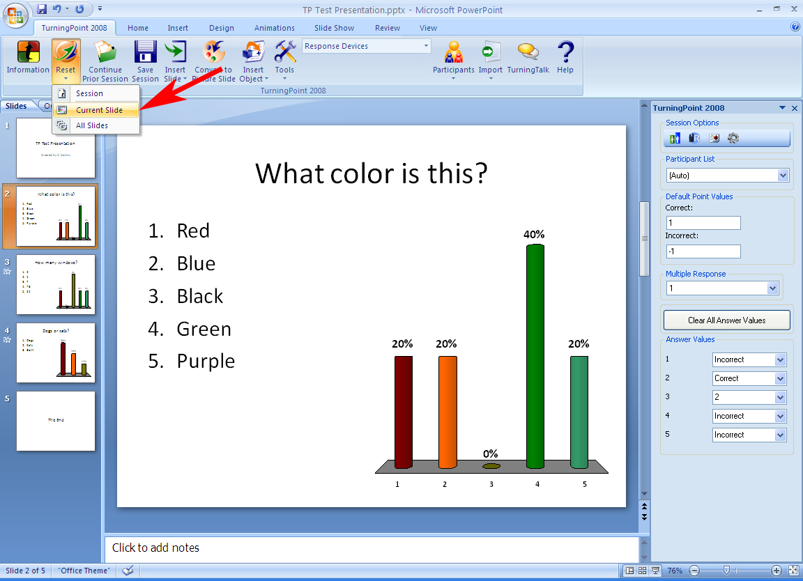

Reset Data in a Presentation
If an error is made while running the presentation (such as advancing a slide before all of the responders have submitted an answer), Turning Point allows you to “reset” Session Data, Individual Slide Data, or data from All Slides so that they can be polled again and correct data can be restored.
Resetting Session Data:
- To reset the Current Session, click on the Turning Point tab at the top of the screen select the “Reset “icon.
- Scroll down to “Session”. You will be asked if you would like to Save the Current session. Select “Yes” or “No”. Turning Point will then clear all current session data.
NOTE: If you intend to generate separate Reports or export different sections of data to Blackboard, Session data must be reset after each section of a class. Failure to do so will accumulate data from all sections in to one Session file.
Resetting an Individual Slide:
- If you would like to reset an individual slide, highlight the slide you wish to reset and on the Turning Point tab select the “Reset” button.
- Scroll down to “Current Slide”. The slide will be reset and you can “re-poll” that slide.
NOTE: Resetting the data for “All Slides” or an “Individual Slide” WILL NOT overwrite the responses already recorded – rather, it will add an additional set of answers for the slides that are reset. This will affect the number of total points Turning Point will tally for the session. Only by resetting the entire Session and running the presentation again will you be able to generate accurate point totals without manually editing Reports.